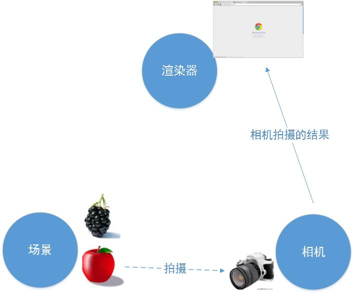
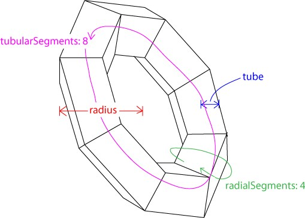

Three.js入门
WebGL可以看做是将OpenGL ES（OpenGL for Embedded Systems，OpenGL嵌入式版本，针对手机、游戏机等设备相对较轻量级的版本）移植到了网页平台，像Chrome、Firefox这些现代浏览器都实现了WebGL标准，使用JavaScript就可以用你熟悉的、类似OpenGL的代码编写了。
Three.js封装了底层的图形接口，使得程序员能够在无需掌握繁冗的图形学知识的情况下，也能用简单的代码实现三维场景的渲染。我们都知道，更高的封装程度往往意味着灵活性的牺牲，但是Three.js在这方面做得很好。几乎不会有WebGL支持而Three.js实现不了的情况，而且就算真的遇到这种情况，你还是能同时使用WebGL去实现，而不会有冲突。
一个典型的Three.js程序至少要包括渲染器（Renderer）、场景（Scene）、照相机（Camera），以及你在场景中创建的物体。

Three.js使用右手坐标系

相机
相机定义了三维空间到二维屏幕的投影方式，用“照相机”这样一个类比，可以使我们直观地理解这一投影方式。
正交投影相机
正交投影照相机（Orthographic Camera）
1 | THREE.OrthographicCamera(left, right, top, bottom, near, far) |
这六个参数分别代表正交投影照相机拍摄到的空间的六个面的位置，这六个面围成一个长方体，我们称其为视景体（Frustum）。只有在视景体内部（下图中的灰色部分）的物体才可能显示在屏幕上，而视景体外的物体会在显示之前被裁减掉。

为了保持照相机的横竖比例，需要保证(right - left)与(top - bottom)的比例与Canvas宽度与高度的比例一致。
透视投影相机
透视投影照相机（Perspective Camera）的构造函数是THREE.PerspectiveCamera(fov, aspect, near, far)

透视图中，灰色的部分是视景体，是可能被渲染的物体所在的区域。fov是视景体竖直方向上的张角（是角度制而非弧度制），如侧视图所示。
aspect等于width / height，是照相机水平方向和竖直方向长度的比值，通常设为Canvas的横纵比例。
near和far分别是照相机到视景体最近、最远的距离，均为正值，且far应大于near。
几何形状
几何形状（Geometry）最主要的功能是储存了一个物体的顶点信息。WebGL需要程序员指定每个顶点的位置，而在Three.js中，可以通过指定一些特征来创建几何形状
立方体
1 | THREE.CubeGeometry(width, height, depth, widthSegments, heightSegments, depthSegments) |
width是x方向上的长度；height是y方向上的长度；depth是z方向上的长度；后三个参数分别是在三个方向上的分段数，如widthSegments为3的话，代表x方向上水平分为三份。
平面
这里的平面（PlaneGeometry）其实是一个长方形，而不是数学意义上无限大小的平面。其构造函数为：
1 | THREE.PlaneGeometry(width, height, widthSegments, heightSegments) |
width是x方向上的长度；height是y方向上的长度；后两个参数同样表示分段。
球体
球体（SphereGeometry）的构造函数是：
1 | THREE.SphereGeometry(radius, segmentsWidth, segmentsHeight, phiStart, phiLength, thetaStart, thetaLength) |
radius是半径；segmentsWidth表示经度上的切片数；segmentsHeight表示纬度上的切片数；phiStart表示经度开始的弧度；phiLength表示经度跨过的弧度；thetaStart表示纬度开始的弧度；thetaLength表示纬度跨过的弧度。
在图形底层的实现中，并没有曲线的概念，曲线都是由多个折线近似构成的。对于球体而言，当segmentsWidth和segmentsHeight值较大的时候，形成的多面体就可以近似看做是球体了。
圆形
圆形（CircleGeometry）可以创建圆形或者扇形，其构造函数是：
1 | THREE.CircleGeometry(radius, segments, thetaStart, thetaLength) |
圆柱体
圆柱体（CylinderGeometry）的构造函数
1 | THREE.CylinderGeometry(radiusTop, radiusBottom, height, radiusSegments, heightSegments, openEnded) |
radiusTop与radiusBottom分别是顶面和底面的半径，由此可知，当这两个参数设置为不同的值时，实际上创建的是一个圆台；height是圆柱体的高度；radiusSegments与heightSegments可类比球体中的分段；openEnded是一个布尔值，表示是否没有顶面和底面，缺省值为false，表示有顶面和底面。
正四面体、正八面体、正二十面体
正四面体（TetrahedronGeometry）、正八面体（OctahedronGeometry）、正二十面体（IcosahedronGeometry）的构造函数较为类似
1 | THREE.TetrahedronGeometry(radius, detail) |
radius是半径；detail是细节层次（Level of Detail）的层数，对于大面片数模型，可以控制在视角靠近物体时，显示面片数多的精细模型，而在离物体较远时，显示面片数较少的粗略模型。这里我们不对detail多作展开，一般可以对这个值缺省。
圆环面
圆环面（TorusGeometry）就是甜甜圈的形状，构造函数
1 | THREE.TorusGeometry(radius, tube, radialSegments, tubularSegments, arc) |
radius是圆环半径；tube是管道半径；radialSegments与tubularSegments分别是两个分段数，详见上图；arc是圆环面的弧度，缺省值为Math.PI * 2。

圆环结
圆环结是打了结的甜甜圈。
1 | THREE.TorusKnotGeometry(radius, tube, radialSegments, tubularSegments, p, q, heightScale) |
p和q是控制其样式的参数，一般可以缺省（相关资料）。heightScale是在z轴方向上的缩放。
new THREE.TorusKnotGeometry(2, 0.5, 32, 8)
自定义形状
由于自定义形状需要手动指定每个顶点位置，以及顶点连接情况，如果该形状非常复杂，程序员的计算量就会比较大。在这种情况下，建议在3ds Max之类的建模软件中创建模型，然后使用Three.js导入到场景中，这样会更高效方便。
1 | // 初始化几何形状 |
最终效果如下：
文字形状
使用文字形状需要下载和引用额外的字体库，在Three.js GitHub master/examples/fonts目录下可下载需要的字体库
1 | var loader = new THREE.FontLoader(); |
附加参数介绍：
- size：字号大小，一般为大写字母的高度
- height：文字的厚度
- curveSegments：弧线分段数，使得文字的曲线更加光滑
- font：字体，默认是’helvetiker’，需对应引用的字体文件
- weight：值为’normal’或’bold’，表示是否加粗
- style：值为’normal’或’italics’，表示是否斜体
- bevelEnabled：布尔值，是否使用倒角，意为在边缘处斜切
- bevelThickness：倒角厚度
- bevelSize：倒角宽度
材质
材质（Material）是独立于物体顶点信息之外的与渲染效果相关的属性。通过设置材质可以改变物体的颜色、纹理贴图、光照模式等。
基本材质
使用基本材质（BasicMaterial）的物体，渲染后物体的颜色始终为该材质的颜色，而不会由于光照产生明暗、阴影效果。如果没有指定材质的颜色，则颜色是随机的。
1 | THREE.MeshBasicMaterial(opt) |
opt包含的可选属性
- visible：是否可见，默认为true
- side：渲染面片正面或是反面，默认为正面THREE.FrontSide，可设置为反面THREE.BackSide，或双面THREE.DoubleSide
- wireframe：是否渲染线而非面，默认为false
- color：十六进制RGB颜色，如红色表示为0xff0000
- map：使用纹理贴图
Lambert材质
Lambert材质（MeshLambertMaterial）是符合Lambert光照模型的材质。Lambert光照模型的主要特点是只考虑漫反射而不考虑镜面反射的效果，因而对于金属、镜子等需要镜面反射效果的物体就不适应，对于其他大部分物体的漫反射效果都是适用的。
光照模型公式为：Idiffuse = Kd * Id * cos(theta)
Idiffuse是漫反射光强，Kd是物体表面的漫反射属性，Id是光强，theta是光的入射角弧度。
创建一个的Lambert材质的方法为1
2
3new THREE.MeshLambertMaterial({
color: 0xffff00
})
还可以设置的属性有
- color是用来表现材质对散射光的反射能力，也是最常用来设置材质颜色的属性。除此之外，还可以用ambient和emissive控制材质的颜色。
- ambient表示对环境光的反射能力，只有当设置了AmbientLight后，该值才是有效的，材质对环境光的反射能力与环境光强相乘后得到材质实际表现的颜色。
- emissive是材质的自发光颜色，可以用来表现光源的颜色。
Phong材质
Phong材质（MeshPhongMaterial）是符合Phong光照模型的材质。和Lambert不同的是，Phong模型考虑了镜面反射的效果，因此对于金属、镜面的表现尤为适合。
漫反射部分和Lambert光照模型是相同的，镜面反射部分的模型为：Ispecular = Ks * Is * (cos(alpha)) ^ n
Ispecular是镜面反射的光强，Ks是材质表面镜面反射系数，Is是光源强度，alpha是反射光与视线的夹角，n是高光指数，越大则高光光斑越小。
不指定镜面反射系数时，效果与lambert材质相同。
1 | var material = new THREE.MeshPhongMaterial({ |
法向材质
法向材质可以将材质的颜色设置为其法向量的方向，材质的颜色与照相机与该物体的角度相关，这在调试时很有帮助。
1 | new THREE.MeshNormalMaterial() |
材质的纹理贴图
单张图片材质设置1
2
3
4
5
6
7
8var texture = THREE.ImageUtils.loadTexture('../img/0.png', {}, function() {
renderer.render(scene, camera);
});
texture.wrapS = texture.wrapT = THREE.RepeatWrapping; // 设置重复方向
texture.repeat.set(4, 4); //设置重复次数
var material = new THREE.MeshLambertMaterial({
map: texture
});
每个面不同的图片1
2
3
4
5
6
7
8
9
10
11
12
13
14var materials = [];
for (var i = 0; i < 6; ++i) {
materials.push(new THREE.MeshBasicMaterial({
map: THREE.ImageUtils.loadTexture('../img/' + i + '.png',
{}, function() {
renderer.render(scene, camera);
}),
overdraw: true
}));
}
var cube = new THREE.Mesh(new THREE.CubeGeometry(5, 5, 5),
new THREE.MeshFaceMaterial(materials));
scene.add(cube);
网格
最常用的一种物体就是网格（Mesh），网格是由顶点、边、面等组成的物体；其他物体包括线段（Line）、骨骼（Bone）、粒子系统（ParticleSystem）等。创建物体需要指定几何形状和材质，其中，几何形状决定了物体的顶点位置等信息，材质决定了物体的颜色、纹理等信息。
网格的创建非常简单，只要把几何形状与材质传入其构造函数。它代表包含点、线、面的几何体，其构造函数是:1
THREE.Mesh(geometry, material);
位置、缩放、旋转是物体三个常用属性。由于THREE.Mesh基础自THREE.Object3D，因此包含scale、rotation、position三个属性。它们都是THREE.Vector3实例，因此修改其值的方法是相同的，以位置为例
1 | // 修改单一属性 |
动画
setInterval与requestAnimationFrame的区别：
当浏览器达不到设定的调用周期时，requestAnimationFrame采用跳过某些帧的方式来表现动画，虽然会有卡滞的效果但是整体速度不会拖慢，而setInterval会因此使整个程序放慢运行，但是每一帧都会绘制出来；
显示FPS
stat.js是Three.js的作者Mr. Doob的另一个有用的JavaScript库。很多情况下，我们希望知道实时的FPS信息，从而更好地监测动画效果。这时候，stat.js就能提供一个很好的帮助，它占据屏幕中的一小块位置，单击后显示每帧渲染时间。下载地址
调用stat.begin();与stat.end();分别表示一帧的开始与结束1
2
3
4
5
6
7
8function draw() {
stat.begin();
mesh.rotation.y = (mesh.rotation.y + 0.01) % (Math.PI * 2);
renderer.render(scene, camera);
stat.end();
}
模型
Three.js有一系列导入外部文件的辅助函数，是在three.js之外的，使用前需要额外下载(下载地址)
*.obj是最常用的模型格式，导入*.obj文件需要OBJLoader.js；导入带*.mtl材质的*.obj文件需要MTLLoader.js以及OBJMTLLoader.js。另有PLYLoader.js、STLLoader.js等分别对应不同格式的加载器，可以根据模型格式自行选择。
obj模型加载1
2
3
4
5
6
7
8
9
10
11
12
13
14
15
16
17var loader = new THREE.OBJLoader();
loader.load('../lib/port.obj', function(obj) {
obj.traverse(function(child) {
if (child instanceof THREE.Mesh) {
// 设置面片的绘制为双面绘制，防止某个角度没有被绘制的情况出现。
child.material.side = THREE.DoubleSide;
// 设置材质
child.material = new THREE.MeshLambertMaterial({
color: 0xffff00,
side: THREE.DoubleSide
});
}
});
mesh = obj;
scene.add(obj);
});
mtl模型加载,mtl模型是带材质的模型加载它需要用不同的库。1
2
3
4
5
6
7
8
9
10
11<script type="text/javascript" src="MTLLoader.js"></script>
<script type="text/javascript" src="OBJMTLLoader.js"></script>
<script>
var loader = new THREE.OBJMTLLoader();
loader.addEventListener('load', function(event) {
var obj = event.content;
mesh = obj;
scene.add(obj);
});
loader.load('../lib/port.obj', '../lib/port.mtl');
</script>
光与影
了使计算机模拟丰富的光照效果，人们提出了几种不同的光源模型（环境光、平行光、点光源、聚光灯等），在不同场合下组合利用，将能达到很好的光照效果。
环境光
环境光是指场景整体的光照效果，是由于场景内若干光源的多次反射形成的亮度一致的效果，通常用来为整个场景指定一个基础亮度。因此，环境光没有明确的光源位置，在各处形成的亮度也是一致的。
1 | var light = new THREE.AmbientLight(0xffffff); |
按照作者的说法材质的ambient属性物体反射光的能力，某一种光照射在物体ambient对该光的通道为0上时，则不会显示该物体。例如：0xff0000的光照射在ambient为0x00ffff的材质上时，不会显示物体。不论材质的color是什么。
经过实验后发现影响光通道的是color属性，不是ambient
点光源
点光源是不计光源大小，可以看作一个点发出的光源。点光源照到不同物体表面的亮度是线性递减的，因此，离点光源距离越远的物体会显得越暗。
1 | THREE.PointLight(hex, intensity, distance) |
hex是光源十六进制的颜色值；intensity是亮度，缺省值为1，表示100%亮度；distance是光源最远照射到的距离，缺省值为0。
1 | var light = new THREE.PointLight(0xffffff, 2, 100); |
平行光
对于任意平行的平面，平行光照射的亮度都是相同的，而与平面所在位置无关。
1 | THREE.DirectionalLight(hex, intensity) |
hex是光源十六进制的颜色值；intensity是亮度，缺省值为1，表示100%亮度。
平行光与点光源一样需要设置位置。
聚光灯
聚光灯是一种特殊的点光源，它能够朝着一个方向投射光线。聚光灯投射出的是类似圆锥形的光线，这与我们现实中看到的聚光灯是一致的。
1 | THREE.SpotLight(hex, intensity, distance, angle, exponent) |
相比点光源，多了angle和exponent两个参数。angle是聚光灯的张角，缺省值是Math.PI / 3，最大值是Math.PI / 2；exponent是光强在偏离target的衰减指数（target需要在之后定义，缺省值为(0, 0, 0)），缺省值是10。
设置聚光灯
1 | light.position.set(x1, y1, z1); |
阴影
能形成阴影的光源只有THREE.DirectionalLight与THREE.SpotLight；而相对地，能表现阴影效果的材质只有THREE.LambertMaterial与THREE.PhongMaterial。
第一步 告诉渲染器渲染阴影1
renderer.shadowMapEnabled = true;
第二步 对于光源以及所有要产生阴影的物体调用1
xxx.castShadow = true;
第三部 接收阴影的物体调用1
xxx.receiveShadow = true;
对于聚光灯，需要设置shadowCameraNear、shadowCameraFar、shadowCameraFov三个值，类比我们在第二章学到的透视投影照相机，只有介于shadowCameraNear与shadowCameraFar之间的物体将产生阴影，shadowCameraFov表示张角。
对于平行光，需要设置shadowCameraNear、shadowCameraFar、shadowCameraLeft、shadowCameraRight、shadowCameraTop以及shadowCameraBottom六个值，相当于正交投影照相机的六个面。同样，只有在这六个面围成的长方体内的物体才会产生阴影效果。
为了看到阴影照相机的位置，通常可以在调试时开启light.shadowCameraVisible = true。
如果想要修改阴影的深浅，可以通过在灯光上设置shadowDarkness，该值的范围是0到1，越小越浅。
此处介绍的实现阴影效果的方法是Shadow Mapping，即阴影是作为渲染前计算好的贴图贴上去的，因而会受到贴图像素大小的限制。所以可以通过设置shadowMapWidth与shadowMapHeight值控制贴图的大小，来改变阴影的精确度。
而如果想实现软阴影的效果，可以通过renderer.shadowMapSoft = true;方便地实现。
着色器
使用着色器可以更灵活地控制渲染效果，结合纹理，可以进行多次渲染，达到更强大的效果。
着色器是屏幕上呈现画面之前的最后一步，用它可以对先前渲染的结果做修改，包括对颜色、位置等等信息的修改，甚至可以对先前渲染的结果做后处理，实现高级的渲染效果。
WebGL是基于OpenGL的，而OpenGL用GLSL（OpenGL Shading Language）这一着色器语言完成着色器工作，因此，WebGL的着色器程序大致与GLSL相同，是一种接近C语言的代码。着色器通常分为几何着色器（Geometry Shader）、顶点着色器（Vertex Shader）、片元着色器（Fragment Shader）等等。由于WebGL基于OpenGL ES 2.0，因此WebGL支持的着色器只有顶点着色器与片元着色器。
着色器代码可以写在单独的文件中（顶点着色器的文件名后缀为.vs，片元着色器的文件名后缀为.fs），也可以在HTML文件中定义script标签实现。需要将script标签的type属性分别设置为x-shader/x-vertex、x-shader/x-fragment
使用标签的语法1
2
3
4
5material = new THREE.ShaderMaterial({
// 给脚本分别设置id为vs，fs
vertexShader: document.getElementById('vs').textContent,
fragmentShader: document.getElementById('fs').textContent
});
顶点着色器
顶点着色器中的“顶点”指的正是Mesh中的顶点，对于每个顶点调用一次。因此，如果场景中有一个正方体，那么对八个顶点将各自调用一次顶点着色器，可以修改顶点的位置或者颜色等信息，然后传入片元着色器。
1 | // 表示变量的范围从顶点着色器到片元着色器，类型为vec2 |
片元着色器
片元是栅格化之后，在形成像素之前的数据。片元着色器是每个片元会调用一次的程序，因此，片元着色器特别适合用来做图像后处理。
1 | varying vec2 vUv; |